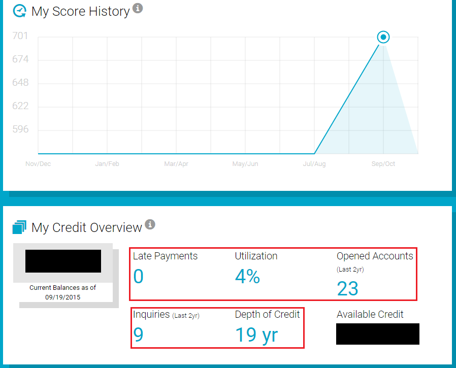
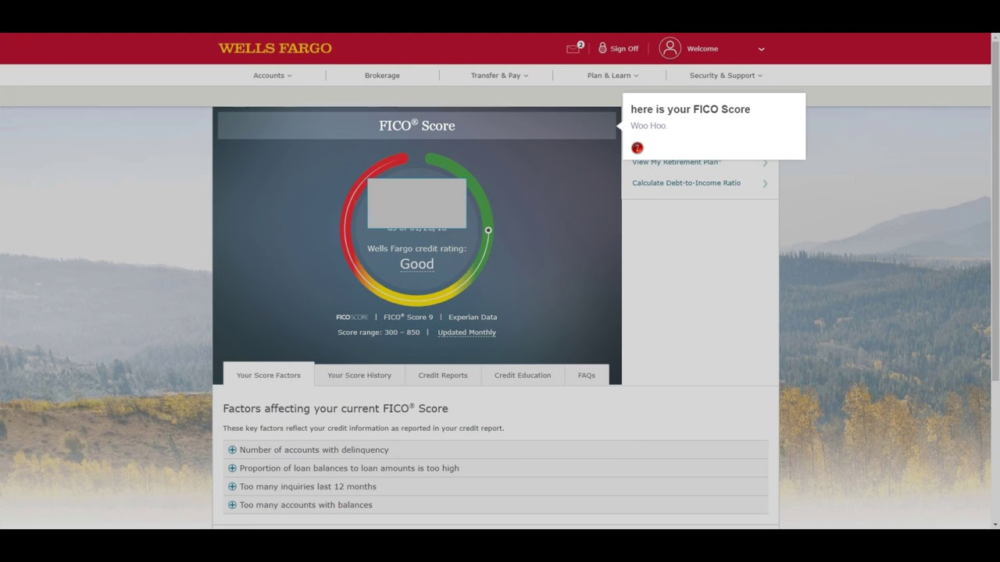

How to View Your Credit Score For Free (For All 3 Credit Bureaus)
 Skip to content UpgradedPoints.com Home Menu Best Cards Search Credit Cards
Top Categories
Credit Card Reviews Best Credit Cards Best Business Credit Cards Best Travel Credit Cards Best Airline Credit Cards Best Hotel Credit Cards Best No Annual Fee Credit Cards Best Cash-Back Credit Cards Popular Guides › Best Chase Credit Cards Best American Express Credit Cards Best Capital One Credit Cards Best Credit Cards for Airport Lounges Best Credit Cards for Travel Insurance Best Credit Cards for Active Duty Military Best Pre-Approved Credit Cards Best Credit Cards [Instant Card Numbers]Card Benefits & Perks
Chase Sapphire Preferred® Card Chase Sapphire Reserve® Card The Amex Platinum Card Amex Platinum 100k American Express® Gold Card Amex Blue Cash Everyday Card Amex Blue Cash Preferred Card Business OwnersBusiness Credit Cards
Best Business Credit Cards Best Chase Business Credit Cards Best Amex Business Credit Cards Best Capital One Business Credit Cards Best Citi Business Credit Cards Best Business Cards for Shipping Purchases Best Business Cards for Advertising PurchasesCard Benefits & Guides
Chase Ink Business Preferred℠ Card Is The Chase Ink Business Preferred Worth It? Chase Ink Business Cash℠ Card Business Platinum® Card from American Express American Express® Business Gold Card Ink Business Cash℠ vs. Ink Business Preferred℠Popular Guides
Points & Miles for Business Owners [Get Started] 10 Reasons to Get a Business Credit Card How to Apply For a Small Business Credit Card Maximize Rewards From Your Business Purchases Chase Business Checking Accounts Comparing Top 3 Chase Business Credit Cards Earn Points Flexible › 20 Best Ways To Earn Chase Rewards Points 20 Best Ways To Earn Amex Rewards Points 10 Best Ways to Earn Citi ThankYou Points 14 Best Ways to Earn Capital One Miles 33 Best Ways To Earn Marriott Rewards Points Airline › 23 Best Ways to Earn American Airlines Miles 22 Best Ways to Earn United Miles 19 Best Ways to Earn Southwest Points 19 Best Ways To Earn Delta Air Lines SkyMiles Hotel › 20 Best Ways To Earn Hilton Honors Points 33 Best Ways To Earn Marriott Bonvoy Points 16 Best Ways To Earn World of Hyatt Points 16 Best Ways To Earn IHG Rewards Club Points Airline Loyalty Programs › American Airlines AAdvantage Delta Air Lines SkyMiles Southwest Airlines Rapid Rewards United Airlines MileagePlus Hotel Loyalty Programs › Hilton Honors Marriott Bonvoy The World of Hyatt Choice Privileges Shopping & Dining › American AAdvantage Dining Delta SkyMiles Dining Chase Shopping Portal Delta SkyMiles Shopping Portal Use Points Flexible › 47 Best Ways To Redeem Chase Points 59 Best Ways To Redeem Amex Points 32 Best Ways To Redeem Citi Points 42 Best Ways to Redeem Marriott Points [Flights] 43 Best Ways to Redeem Capital One Miles Airline › 17 Best Ways To Redeem United Miles 36 Best Ways To Redeem British Airways Avios 13 Best Ways To Redeem Delta SkyMiles 27 Best Ways To Redeem American Miles 16 Best Ways To Redeem Alaska Miles Hotel › 21 Best Ways To Redeem Hyatt Points 27 Best Ways To Redeem IHG Points 13 Best Ways To Redeem Hilton Points 30 Best Ways to Redeem Marriott Points [Hotel Stays] Award Booking Guides › Best Ways To Book AA Business Class Best Ways To Book Delta One Business Class Best Ways To Book United First Class Destination Guides › Best Ways to Fly to Europe With Points & Miles Best Ways to Fly to London With Points & Miles Best Ways to Fly to Paris With Points & Miles Our Tools › Transfer Partner Calculator Guides & Resources Airline Guides › Airline Award Cancellation & Change Fees Airline Change & Cancellation Fees (Non-Award) Most Popular Airline Baggage Fees Southwest Companion Pass Guide United Polaris Guide Airport Guides › 10 Most Pet-Friendly U.S. Airports Detailed U.S. Airport Guides U.S. Amex Centurion® Lounges U.S. Delta Sky Club Lounges U.S. Priority Pass Lounges Product Guides › Our Best Travel Product Reviews Costco Travel Global Entry Program ITA Matrix TSA PreCheck Travel Guides › 75 Best Museum Virtual Tours 62 National Park Virtual Tours 101+ Virtual Tours of Popular Attractions Buying the Best Travel Insurance Travel Tips › Tourist Visa Requirements for U.S. Citizens How to Make a Travel Budget [Template] The REAL ID Act Travel Packing Checklist & Tips Family Travel › 33 Best Tips for Family Travels With Kids Disney Vacation Packing List [Printable] Visit Disney World Using Points & Miles Tips For Less Stressful Flights With Kids Coronavirus SearchFeatured Cards
The Platinum Card® from American Express Earn 60,000 75,000 Membership Rewards points. Terms Apply. New Welcome Offer: Earn 10x points at U.S. Gas Stations and U.S. Supermarkets (on up to $15,000 in combined purchases) during your first 6 months of Card Membership. Blue Cash Preferred® Card from American Express Earn $250 $300 Cash Back. Limited Time Offer! $0 introductory annual fee for the first year, then $95. Offer expires 12/10/2020. Terms Apply. Chase Sapphire Preferred® Card 60,000 Bonus Points Our #1 recommended travel card, loaded with benefits including excellent travel insurance coverage . American Express® Gold Card Earn 35,000 60,000 Membership Rewards points. Terms Apply. New Welcome Offer: We found 30 valuable benefits & perks you can maximize with this card. See 10 Best Credit Cards Advertiser DisclosureHow to View Your Credit Score For Free (For All 3 Credit Bureaus)
BY Susan Wright - UPDATED: December 1, 2020 Credit Cards / Strategies & GuidesFull Disclosure: We may receive financial compensation when you click on links and are approved for credit card products from our advertising partners. Opinions and product recommendations on this site are ours alone, and have not been influenced, reviewed or approved by the issuer. Please see our Advertiser Disclosure for more details!
Because your credit score can have a big impact on the interest rate you’re offered on loans and credit cards — as well as whether you’ll even qualify — it’s important to keep tabs on this figure regularly.
Unfortunately, though, doing so for free may not be easy — the big 3 credit bureaus will often charge a fee to access to your score. But there are a few ways you can still view your credit score for free with all 3 of the credit bureaus.
In a hurry? We recommend using either Credit Karma or Credit Sesame to check your credit score without being charged from all 3 credit bureaus.
Table of contents
How the FICO System Works What Exactly Is a FICO Score? Credit Scores Are Not Credit Reports How Your Credit Score Is Determined How to Check Your Credit Score for Free Free Experian Score Free Equifax Score Free TransUnion Score Other Ways to Access Your Credit Score for Free Keeping Tabs on Your Credit Score The Bottom Line on Your Credit ScoreTable of Contents
How the FICO System Works What Exactly Is a FICO Score? Credit Scores Are Not Credit Reports How Your Credit Score Is Determined How to Check Your Credit Score for Free Free Experian Score Free Equifax Score Free TransUnion Score Other Ways to Access Your Credit Score for Free Keeping Tabs on Your Credit Score The Bottom Line on Your Credit ScoreHow the FICO System Works
You may have heard credit scores referenced as FICO scores. FICO stands for the Fair Isaac Corporation, which is the company that developed the credit scoring system.
Your credit score can range between 300 and 850.In the case of credit scores, FICO takes your credit information and uses it to help lenders and creditors determine whether or not you would be a good credit risk. While FICO itself is not a credit reporting agency, it uses the information provided by the big credit bureaus: Equifax , Experian , and TransUnion.
Because there are multiple credit bureaus, you can actually have multiple FICO scores. While each of these bureaus has a slightly different scoring method, your scores will generally range from 300 to 850, with anything over 800 considered excellent and anything under 580 considered poor.
Hot Tip: Your FICO score can differ between the 3 credit bureaus because not all lenders and creditors report information to all of them. So it is beneficial to know your credit score with each one.
What Exactly Is a FICO Score?
FICO scores can impact whether or not you are given credit (like obtaining a new credit card), as well as in other areas: applying for an apartment lease, getting a new cell phone, and even being offered employment.
Lenders and creditors consider your credit score because it can be a fast and reliable way to assess your credit risk. In other words, if a lender provides you with a loan, they want to know the probability of getting paid back.
A wide range of lenders, creditors, and other entities check credit scores.
If you have a low credit score (and are therefore considered a higher credit risk), then the lender or creditor will typically place a higher interest rate on the loan or credit card they’re providing you.
While many people may be aware of this, they don’t always realize how much higher the payment on a loan or a credit card can be, even with just 1-2 interest rate percentage points added.
For instance, with a 30-year mortgage, even a fractional difference in interest rate could equate to thousands of dollars more in payments over time!
Credit Scores Are Not Credit Reports
A credit score is not the same as a credit report . This number is statistically determined based upon various weightings given with regard to your credit history; higher credit scores reflect a more creditworthy borrower.
Although there are several ways to determine your credit score, the most widely used scoring system is FICO. When determining a credit score, different weightings are given to various categories. These include:
Past payment history 35% Current debt 30% Credit history 15% Type of debt 10% New credit 10%Different lenders can also vary in what they consider to be a good or poor credit score. For instance, one lender may offer its lowest interest rates to those who have scores of 760 or better, while another lender may be more lenient and offer its lowest interest rates to people who have a score of 730 or higher.
Hot Tip: It’s important to note that different types of lenders may use different FICO scores. For example, an automobile lender may use FICO Auto scores, while many credit card issuers will use FICO Bankcard scores.
How Your Credit Score Is Determined
Your credit score is calculated with the credit data included on your credit reports from the various credit bureaus. Not all lenders and creditors report information to all 3 of the major credit bureaus, though, so remember your score can differ between them.
There are several types of information taken into consideration when your credit score is determined. Each of these can carry a different “weight,” or degree of importance in the overall calculation. These categories include the following:
Your Payment History 35%
Your payment history takes into consideration your percentage of on-time payments for loans and other credit obligations. Because this category is highly weighted, making your payments on time can be one of the very best ways to get (and keep) your credit score high.
The different accounts considered here can include payments on a mortgage, auto loan(s), retail accounts (such as gas or department store credit cards), credit cards (such as Mastercard and VISA), and finance company accounts.
Other items that can make a difference in this category include the following:
How late a payment was (such as 30 days, 60 days, or more) How many late payments you have made How much money you owe How recently the late payments occurredAmount of Money You Owe 30%
One of the other big factors determining your credit score is the amount of money you owe compared to the amount of total credit you have.
For instance, if you have a credit card with a $10,000 credit limit, it’s better for you to have a $1,000 balance as opposed to a balance of $8,000. Here, the lower balance amount would be given a higher rating in terms of credit scoring.
Hot Tip: The amount owed on different kinds of accounts can also make a difference in your credit score. In this instance, owing a mortgage is considered less risky than owing a large credit card balance.
Each credit scoring category has different weightings in terms of importance.Length of Your Credit History 15%
Your credit history also factors into the weighting of your credit score. This factor takes an average of how long you have had credit and/or loans in your name. If you have a long history of credit, lenders and creditors will have more information about you, and know more about your history of paying your bills.
For this reason, if you happen to have credit cards you haven’t used in a long time, it can still make sense not to cancel these accounts — doing so can actually hurt your overall credit score!
Amount of New Credit and Credit Inquiries 10%
The number of new credit inquiries you have will also be considered. In this case, it can count against you if you have too many credit inquiries , especially within a short period of time.
Here, there is a difference between a hard credit inquiry and a soft credit inquiry. Hard inquiries can occur when you apply for a mortgage, auto loan, or credit card, whereas soft inquiries (which don’t impact your credit score) can occur via a background check from a potential employer or apartment landlord.
Your Overall Credit Mix 10%
Your credit score will also be partially based on your total number of accounts, as well as the different types of credit you have. For example, if you have more accounts, you may have a higher credit score provided that all the payments have been made on time.
Also, the different types of credit you have will be taken into consideration. Here, it’s good to have a variety of different types of accounts vs. just 1 form of credit. For instance, it’s better to have a diversified “mix” of credit, such as a mortgage, a car loan, and a credit card instead of having only credit cards.
How to Check Your Credit Score for Free
There are many ways to check your credit score, but there’s often a charge if you go directly through the credit bureaus. You can also go through FICO directly to check your score, but at a cost of $60.
However thankfully there are websites where you can go to view your credit score from one or more of the three credit bureaus. We recommend using either Credit Karma or Credit Sesame where you can check your credit score for free.
You can also go to this website to obtain your free credit score and report from all 3 credit bureaus. However, this is via a 7-day trial — after that, you’ll need to sign up for a monthly membership at $29.95. This service provides you with daily credit monitoring and alerts, as well as $1 million in identity theft insurance.
Finally, you can use Discover’s Credit Scorecard . You aren’t required to be a Discover customer to use this service, and checking your score here won’t “ding” your credit. Chase has a similar free service called Chase Credit Journey.
Free Experian Score
To view your score from Experian, there are several free avenues, including:
Experian.com: Experian advertise on their site: “Your credit report and FICO® Score all free. No credit card needed”. Chase Slate credit card: If you have a Chase Slate credit card, you’ll also gain access to your Experian score for free, updated on a monthly basis. American Express card: Likewise, if you own any of the American Express credit cards , you can simply go online to view your score from Experian. This, too, will be updated every month (if changes are made).Free Equifax Score
There are strategies you can use for viewing your Equifax score for free, too:
Citibank credit cards: If you own any of the Citibank branded credit cards, you can view your updated Equifax score for free via your online card statement. (Note that this free service does not come through Citibank cards that are branded with other entities, such as the Hilton HHonors or the American AAdvantage credit card options. ) Huntington Bank Voice credit card : With the Huntington Voice card, you can check out your Equifax Bankcard 02 score at no charge. To do so, you need to sign up for an account; you’ll be given a link to view your info when logging in. DCU Credit Union credit cards : If you have any credit card(s) through DCU Credit Union (or a checking account with direct deposit), you can view your Equifax credit score for free online. This is also updated on a monthly basis.Free TransUnion Score
Methods of obtaining your TransUnion score for free can include:
Sam’s Club/Walmart credit card: If you’re a member of Sam’s Club and you have a Sam’s credit card and/or you own a Walmart credit card (including a Walmart Mastercard), you can find your TransUnion score via your online statement. (Note that this is not the case if you receive paper statements through the mail.) Bank of America credit card(s): Bank of America offers select credit card accounts where you can view your TransUnion score (updated each month) via your online account summary page. If you use one of these cards, there is no charge for this service.Other Ways to Access Your Credit Score for Free
There are also a few other ways you may be able to access your credit score for free. For example, according to the U.S. Consumer Financial Protection Bureau , some nonprofit credit counselors and HUD-approved housing counselors can often provide you with both a free credit score and credit report. These entities may also be able to help you review (and if necessary improve) your credit information.
Hot Tip: Consumers can get a copy of their credit reports (1 from each credit bureau) for free once a year by going to annualcreditreport.com .
Also, if you have been denied a loan or credit, you are allowed to obtain a free copy of the credit information from the bureau that the denial decision was based on.
Keeping Tabs on Your Credit Score
Your credit score is not a static number. Rather, these scores can change (sometimes substantially!) as the data in your credit report is updated. Therefore, as your credit history evolves, the information on your credit report should reflect those changes.
When you’re seeking credit, such as applying for a loan or a credit card, it’s important to keep in mind that you don’t necessarily have to have a high credit score to be approved. However, a lower score could mean that you’ll be offered a higher interest rate.
Over time, however, if your credit score improves, the interest rate you get could also possibly be lowered. One way to help ensure your credit is accurate is to regularly monitor and check your credit report and credit score to make sure all the information is correct and up-to-date.
The Bottom Line on Your Credit Score
Most lenders and creditors will use your credit score in making their approval decisions. Likewise, many credit cards that have the most lucrative rewards will often be offered only to those who have a certain minimum credit score.
With that in mind, be sure to check your credit score and credit report on a regular basis to ensure accuracy. If your credit score could be improved, think about how your score is calculated and what you can do to improve it — especially following good bill payment habits going forward!
Frequently asked questions
How can you check your credit score for free?
There are many ways to check your credit score for free. If you have a credit card with Chase, American Express, or Citi Bank, then you likely already receive free monthly credit reports.
Another option is to sign up for a free service like Credit Karma or Credit Sesame .
Sending feedback...
Your feedback has been sent. Thank you!
We take your comments very seriously as they really help us to improve the site.
If you'd like to add a comment to this article and share your valuable feedback and opinions, please click here to leave your comment.
We really appreciate it!
- Alex & Erin
An error occurred please try again later
About Susan Wright
While writing about finance and insurance isn't something that keeps most people awake at night, it is what Susan Wright has focused on for more than 25 years. As a financial copywriter, Susan has an eye for money-related details such as credit and savings, and she loves to pass along helpful information to consumers. Susan holds 11 financial industry designations (including CLU, ChFC, RHU, REBC, ADPA, CITRMS, CIPA) as well as several licenses. Read MorePost navigation
How To Get Compensation When Your Flight Is Delayed or Canceled [2020] How To Use The Delta SkyMiles Dining Portal to Earn More MilesDisclaimer: Any comments listed below are not from the bank advertiser, nor have they been reviewed or approved by them. No responsibility will be taken by the bank advertiser for these comments.
Any thoughts or questions? Comment below! Cancel reply
Related Posts
The Best Ways to Monitor Your Credit Score & Credit Report The Ultimate Guide to TransUnion - Check Your Credit Report & Credit Score Quizzle Review: Legit Free Credit Score or Scam? The Ultimate Guide to Equifax - Check Your Credit Report & Credit ScoreTop Partner Offers
The Platinum Card® from American Express Earn 60,000 75,000 Membership Rewards points. Terms Apply. New Welcome Offer: Earn 10x points at U.S. Gas Stations and U.S. Supermarkets (on up to $15,000 in combined purchases) during your first 6 months of Card Membership. Blue Cash Preferred® Card from American Express Earn $250 $300 Cash Back. Limited Time Offer! $0 introductory annual fee for the first year, then $95. Offer expires 12/10/2020. Terms Apply. Chase Sapphire Preferred® Card 60,000 Bonus Points Our #1 recommended travel card, loaded with benefits including excellent travel insurance coverage . American Express® Gold Card Earn 35,000 60,000 Membership Rewards points. Terms Apply. New Welcome Offer: We found 30 valuable benefits & perks you can maximize with this card. See 10 Best Credit CardsCredit Cards
Best Travel Credit Cards Best Business Credit Cards Best Chase Credit Cards Best Amex Credit Cards Best Capital One Credit Cards Best Cards for Travel Insurance Advertisement
Latest Articles
The 12 Best Baymont by Wyndham Hotels to Book With Points List of Pet-Friendly Hyatt Brands in 2020 [Policies, Deposits, Size Allowances] How to Book Cheap Car Rentals in San Diego [Price Comparisons] The 12 Best Rosewood Hotels & Resorts in the World [2020]Credit Cards Earn Points Use Points Guides & Resources Business Owners About Contact Press & Mentions Beginners Jobs & Careers Annual Scholarship Follow us on Facebook UpgradedPoints on Twitter UpgradedPoints on Instagram UpgradedPoints on Pinterest © 2020 Upgraded Points™, LLC. All Rights Reserved. Advertiser Disclosure Privacy Policy Sitemap Terms & Conditions
Disclaimer: Upgraded Points, LLC and its website, UpgradedPoints.com, provides information on credit cards, reward programs, travel information and ancillary information concerning travel and credit cards. The information provided is for informational purposes only and should not be considered financial, tax or legal advice.
Upgraded Points, LLC uses reasonable efforts to maintain accurate information on the site — and p rior to applying for any credit card offers found on UpgradedPoints.com, all visitors should review other features of such credit cards including but not limited to interest rates, annual fees and transaction fees, and should determine the suitability of such credit cards considering their own individual financial position.
Advertiser Disclosure: Many of the credit card offers that appear on this site are from credit card companies from which we receive compensation. This compensation may impact how and where products appear on this site (including, for example, the order in which they appear). This site does not include all credit card companies or all available credit card offers. For more information on our advertisers, see here. In addition, as an Amazon Associate we earn from qualifying purchases.
Editorial Disclosure: The content featured on UpgradedPoints.com has not been provided by the credit card companies mentioned. Any and all options, reviews, comments and analyses are the responsibility of the author(s) and not any Advertiser or credit card issuer.
Advertiser Disclosure
Many of the credit card offers that appear on this site are from credit card companies from which we receive financial compensation. This compensation may impact how and where products appear on this site (including, for example, the order in which they appear). However, the credit card information that we publish has been written by experts who know these products inside out, and what we recommend is what we would (or already) use ourselves. This site does not include all credit card companies or all available credit card offers that are on the market. Click here to see a list of advertisers that we work with.
Close